PythonWorkerFactory: obtaining an executor-local interpreter
component index
PythonWorkerFactory answers a question for an executor task: which local Python process and socket can this invocation use? It does not know the function or send partition records. That is the executor-side runner's job. On YARN the factory lives in the executor JVM; its daemon and workers are processes in that executor's container, not new YARN allocations. It never lends out the Python driver that runs the submitted script.
Flow at a glance
- Executor runner: The runner requests a local worker for the task's Python environment.
- Worker factory: If no worker is idle, the factory connects to its local Unix daemon.
- Socket handoff: The daemon forks a child; the factory gives the runner that child's socket.
Key distinction: The factory supplies the connection; the runner sends the function and the worker executes it.
Show the animated flow

Ownership and interface
| Boundary |
What crosses it |
Runner to SparkEnv |
Python executable, worker module, daemon module, effective environment, and daemon-mode request. SparkEnv caches factories by the first four; a conflicting daemon-mode request for the same key is an error. |
| Factory to runner |
A PythonWorker (a JVM wrapper for the connected SocketChannel and selector), plus an optional PythonWorkerHandle for liveness, termination, and diagnostics. The wrapper is not the interpreter. |
| Task completion to factory |
Release an eligible worker for reuse, or destroy a worker that must stop. A factory can outlive many attempts; SparkEnv.stop() stops its cached factories. No pool is shared between executors. |
The factory lookup is lazy. Each factory keeps its daemon process and listening address, a worker-to-handle map, a FIFO idle queue, and a separate map of directly launched processes. The socket wrapper and factory state distinguish an idle, connected child from a daemon that can fork another child.
Trace: partition 7 needs Python; partition 8 arrives later
Sequence diagram · Open full sizeText equivalent
sequenceDiagram
participant R as Executor runner
participant F as Local factory
participant D as Python daemon
participant W as Python worker
R->>F: Acquire for partition 7
F->>D: Start if absent, then connect to advertised address
D->>W: Fork child with accepted socket
W-->>F: Report child PID, then complete TCP handshake
F-->>R: Connected worker and handle
R->>W: Run partition 7 over the socket
W-->>R: Results and clean end-of-stream reply
R->>F: Release if reuse is enabled
R->>F: Acquire for partition 8 with the same key
F-->>R: Return live idle child, or create another
- On the Unix daemon path,
create() first dequeues idle workers. A live handle and refreshed, non-blocking channel can be handed back immediately. It discards unusable entries. With no match, it lazily starts pythonExec -m pyspark.daemon pyspark.worker (default modules). The daemon advertises an ephemeral loopback port or configured Unix-domain socket path on stdout. Checkout and daemon startup.
- The JVM connects; the daemon accepts and forks. The child reports its PID on the accepted socket. For TCP the JVM authenticates to the child; the Unix-domain mode skips the TCP secret exchange. The JVM gives that connection, not the daemon's stdin/stdout, to the runner. Concurrent invocations cannot borrow the same checked-out worker. Connection and retry; child loop.
spark.python.use.daemon and spark.python.worker.reuse are separate switches. With a daemon but no reuse, later tasks can use the same daemon but not the finished child. With reuse, a clean protocol reply lets the runner release the child. A configured spark.python.factory.idleWorkerMaxPoolSize evicts the oldest idle worker on release; the monitor also drains a pool after inactivity. The idle cap is not a cap on concurrently running tasks. Defaults, pool cap, cleanup and release.- Without a daemon (including Windows), the direction reverses: the JVM listens, launches
pythonExec -m workerModule, and accepts the child's connection and PID. Release closes this worker's channel instead of queuing it. There is no promise of the same PID on a later task. Direct launch.
If acquisition fails
| Executor-container clue |
What to check first |
Bad data in ... standard output during daemon startup |
The first stdout bytes are the port or socket path. Inspect daemon stderr and the executor's Python path; even a sitecustomize.py print can corrupt this handshake. The task function has not run. |
Python worker failed to connect back |
This is the direct-launch accept/authentication/PID path. Check the nested cause and child stderr; verify the executable and modules in the executor environment, not just on the submit host. |
| Dead idle worker discarded, or daemon socket restart |
A dead child is skipped. A daemon SocketException or connect timeout triggers one restart-and-retry; it is not a retry of the user's partition code. Inspect executor/container loss separately if all local workers disappeared. |